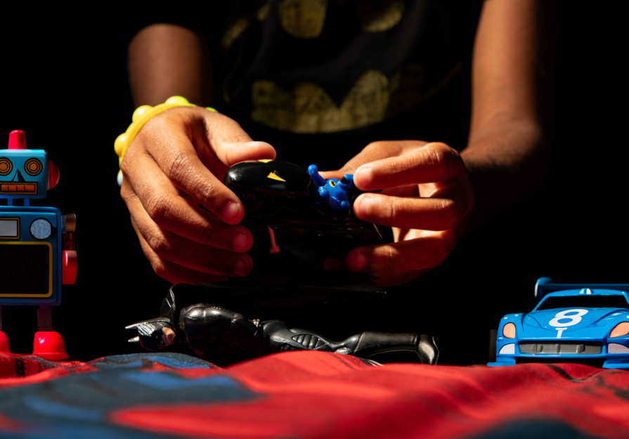

The Closing Reception of Jordan Porter-Woodruff’s The Children Play Games
In The Children Play Games, the artist explores the fragile relationship between play, perception, and imagination through a lens that intertwines past memories, present realities, and future possibilities. The show invites viewers to reflect on how children engage with their world in an age where Artificial Intelligence and deep Internet culture increasingly shape their experiences and understanding. By juxtaposing traditional play with AI-infused elements the artist creates a dialogue about the shifting boundaries of authenticity and creativity in childhood.
Today’s children grow up alongside intelligent machines while immersed in an endless, unfiltered digital stream. Their minds are trained to scroll and react, often at the expense of slower, tactile forms of play that once nurtured fine motor skills, independent thought, and imaginative problem-solving. Algorithmic feeds promise limitless information but leave little room for open-ended discovery, offering access without the depth of true exploration.
Artificial Intelligence sharpens this dilemma by performing acts of invention that once belonged to the developing mind. From generating pictures to completing stories, AI delivers finished creations that bypass the frustration—and growth—of making something from nothing. When creativity is outsourced to algorithms, children risk becoming consumers of novelty rather than creators of it, spectators to a simulation of imagination that demands nothing of their own.
Against this backdrop, The Children Play Games seeks to reclaim the essential terrain of imagination. Each photograph functions as a portal into a dreamlike, yet critical space where the physical and digital coexist without clear hierarchy. By inviting viewers to step into these constructed realities, the exhibition calls on society at large to consider how we might safeguard environments that sustain curiosity, protect the vital connection between mind and hand, and empower the next generation to shape worlds of their own making rather than surrender to those designed for them.